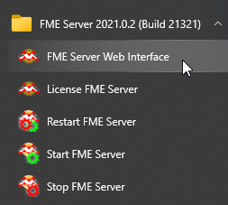
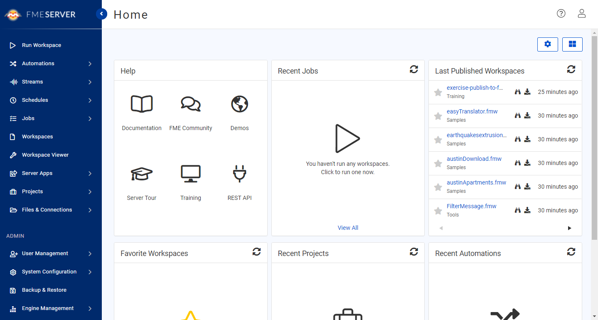
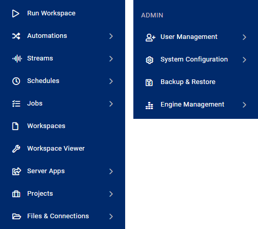

After completing this unit, you’ll be able to:
Although translations are authored in FME Workbench, the core tools of FME Server are accessed through a web-based interface.
The web interface is accessed through the URL http://<servername>:<port>/fmeserver (the port may be optional) or through the start menu:

After you log in, the web interface for FME Server looks like this:

The main part of the interface displays page information. The landing page, for example, has shortcuts to lists of recent jobs, projects, automations, and favorite workspaces. What is displayed on an individual user's home page is customizable.
The left-hand side of the interface is the side menu. Selecting a menu item changes the content of the page to match the menu item chosen. Additionally, the menu will change depending on the privileges the user has.
In general, FME Server functionality is accessed through the web interface menu. There are two main sections in this menu:

The first section relates to the use of FME Server. It has - among others - options for running a workspace, accessing repositories, setting up schedules, and reviewing job history.
The next section of the menu relates to the administration of FME Server. It has - among others - options for managing engines, setting up security, and creating system backups.
There are a couple of additional menus located in the top-right part of the interface:

The first provides access to help tools for authors, users, administrators, and developers. And the second provides options for managing your user account options.
Log in to your FME Server and explore the web interface.